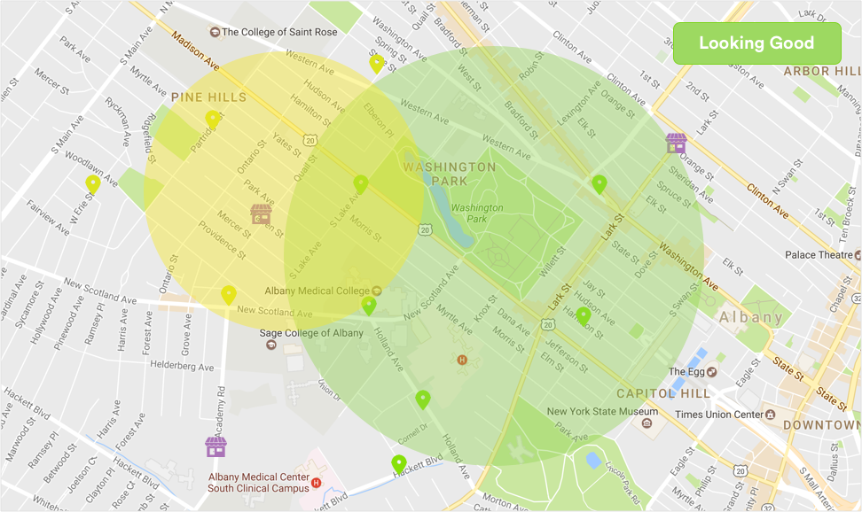
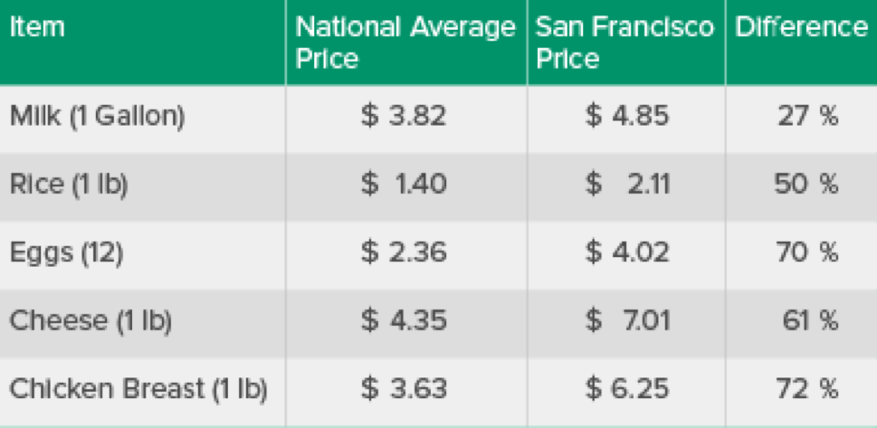

let's find something good to eat

Things are look pretty good
Your neighborhood is doing pretty well. You're in an area that has a lot of healthier food options compared to the unhealthy options. There are also some food banks and co-ops in your neighborhood that you can join or contribute to as well! The areas that are in the yellow still have some good food but there are also the same amount or more unhealthier places. These places are for groceries and buying something to eat in a hurry.

How does money factor into this?
The chart above shows the average cost of food in your neighborhood. These prices will vary from store to store but the chart will just give you a main idea of what's going on. You can drag the chart from left to right to see the other food prices.
What's In Your Area
Cost of Food
Health + You
Your Congressman
Third Slide
This is a description for the third slide.